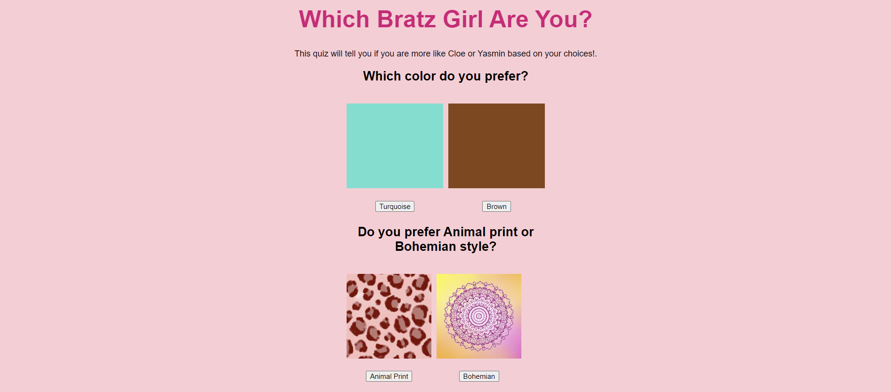
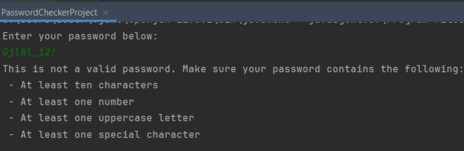

The Activist Toolkit is a website that I collaborated on during the Girls Who Code Summer Immersion Program. The objective was to create a website detailing a problem affecting today's society. Megan and I decided to do the "Impact of Fast Fashion on the Environment" as it was a topic we were both interested in researching.
This is a project I worked on during my Girls Who Code Summer Immersion Program. The objective was to make a website using if and else if statements. I was really into Bratz at the time so I created a personality quiz. Based on the user's selection to the questions, it would assign you as either Cloe or Yasmin.
This project uses Java to determine whether a user inputted password is secure. If the password is secure, the program with output "This is a secure password". If the password is not secure the program will display that the user's password is not secure and will provide them with a list of credentials they can add to make their password more secure
